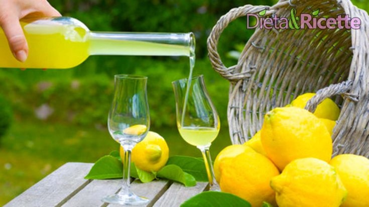

Limoncello

Descrizione:
Il limoncello è il popolarissimo liquore realizzato con la scorza di agrumi della Campania,
tradizionalmente preparato con limoni tipici del territorio della Costiera amalfitana.
Ingredienti:
- Limoni grandi, biologici non trattati 5
- Zucchero 600 g
- Alcol puro a 95° 500 ml
- Acqua 750 ml
- Sbucciate i limoni con un pelapatate,
dovrete prelevare solo la scorza gialla e non la parte bianca che risulterebbe amara.
- Prendete un recipiente di vetro con chiusura ermetica, versate all’interno l’alcol e le scorze dei limoni,richiudete il barattolo e lasciate
macerare le scorze nell’alcol per 30 giorni in un luogo buio e lontano da fonti di calore.
- Trascorsi i 30 giorni recuperate le scorze e preparate lo sciroppo: in un tegame versate l’acqua e lo zucchero,
portate al bollore lo sciroppo e, una volta raggiunto il bollore spegnete il fuoco, versate lo sciroppo in una brocca.
- Aggiungete lo sciroppo nel contenitore con le scorze di limone.
- Agitate il barattolo per mescolare lo sciroppo, quindi lasciatelo ancora riposare per 40 giorni, sempre al buio lontano da fonti di calore.
Il vostro limoncello fatto in casa è pronto per essere degustato.